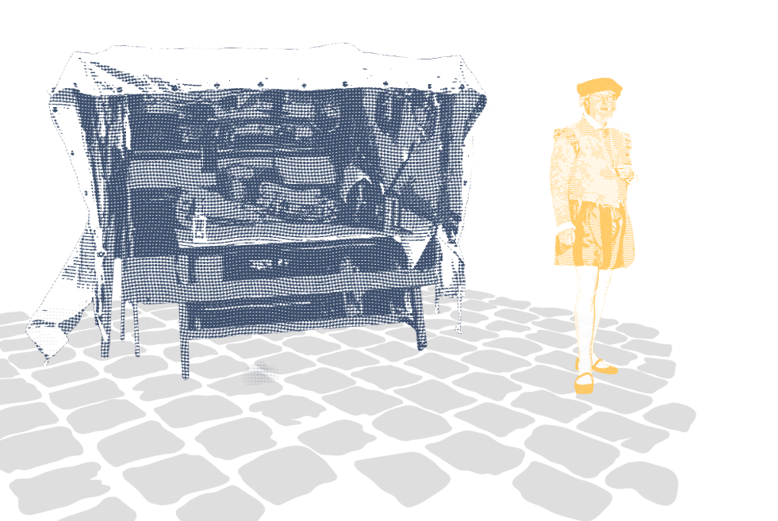
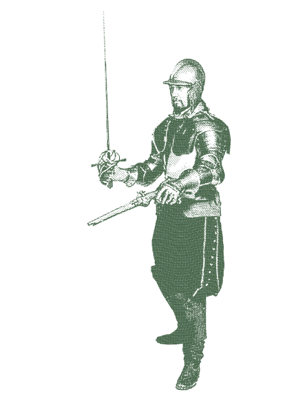
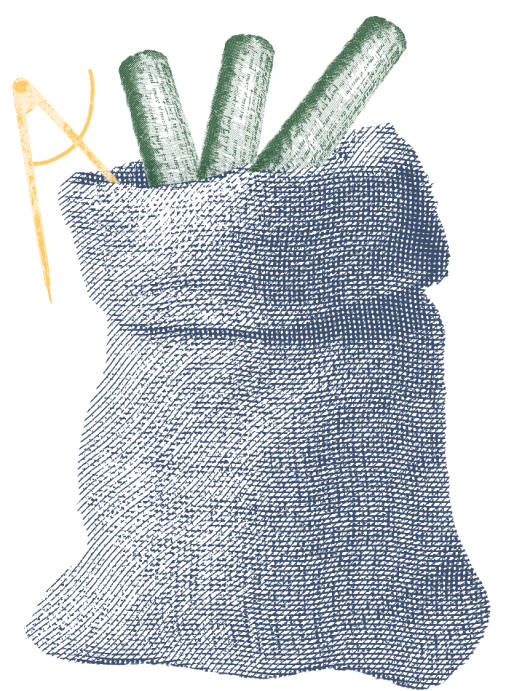

Kies een boek die Moretus aan zijn zoon Gaspar moet voorlezen.
Ontdek samen het verhaal van Christoffel Plantijn.


Klik op een boek en kies je eerste verhaal.
Goed gekozen Balthasar, het is een verhaal over de avonturen van je grootvader. Steek je nog de kaars aan zodat ik kan beginnen voorlezen.


Wat leuk, ik steek snel de kaars aan zodat we kunnen beginnen lezen.
Pak de lucifer en laat de kaars branden

De geur van inkt en vers papier vulde de lucht in de kleine werkplaats in Antwerpen. Het was 1555, en Plantijn had al zijn spaargeld geïnvesteerd in de oprichting van zijn drukkerij, de Officina Plantiniana. Hij wist dat het een riskante onderneming was, maar zijn hart klopte vol hoop en ambitie.


Zijn eerste opdracht was een bescheiden boek, een verzameling Latijnse teksten. Hij werkte dag en nacht, perfectioneerde elke pagina en controleerde elk detail. Toen het werk af was, bracht hij het naar een welgestelde koopman op de Grote Markt.

Veeg met de inkttampon over het blad om de tekst zichtbaar te maken.
Meester Plantijn, ik bewonder je werk. Dit is van een zeldzame kwaliteit. Ik voorspel dat jouw werk niet onopgemerkt zal blijven.

De jaren 1560 brachten donkere wolken boven Antwerpen. De stad, ooit een centrum van handel en kennis, raakte verscheurd door religieuze conflicten tussen katholieken en protestanten.
Voor een drukker was dit een gevaarlijke tijd; één verkeerde tekst kon het einde van je carrière—of je leven—betekenen.
Op een ochtend verscheen een groep soldaten bij de deur van de Officina Plantiniana. Ze beschuldigden Plantijn van het drukken van verboden protestantse geschriften. Hoewel hij zichzelf verdedigde en beweerde alleen neutrale werken te drukken, werd hij met argwaan bekeken.
“Ik volg enkel mijn ambacht,”verdedigde Plantijn zichzelf. Maar in zijn hart voelde hij de dreiging groeien. De stad werd steeds gevaarlijker, en zijn geliefde werkplaats was niet langer veilig
Op een nacht hoorde Plantijn het geluid van voetstappen buiten zijn werkplaats.

Hij keek door het sleutelgat van de deur en zag mannen in donkere mantels, fluisterend en naar zijn huis wijzend. Zijn hart klopte in zijn keel. Hij wist wat dit betekende: zijn leven was in gevaar.
Hij verzamelde zijn gezellen en gaf instructies om de kostbaarste manuscripten te verstoppen. “Als ze hier binnenkomen,” zei hij, “moet ons werk veilig zijn, zelfs als wij dat niet zijn.”

In het holst van de nacht, met slechts een kleine zak vol manuscripten en gereedschap, vertrok Plantijn uit Antwerpen.
Hij keek achterom naar zijn drukkerij, een plek die hij met liefde en hard werk had opgebouwd, en voelde zijn hart breken. De reis naar Parijs was zwaar en vol gevaren. Onderweg vermomde hij zichzelf om niet herkend te worden door de autoriteiten.
Zijn gedachten bleven terugkeren naar zijn gezin en zijn werkplaats, die hij achter moest laten. Maar diep van binnen voelde hij de woorden die zijn moeder zei voor haar dood: Maak iets van je leven.
En wat er hierna gebeurde, is voor een volgende keer, Nu is het bedtijd.